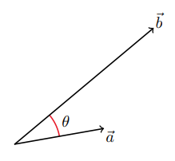
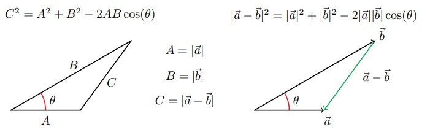
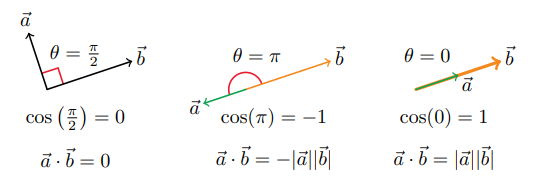
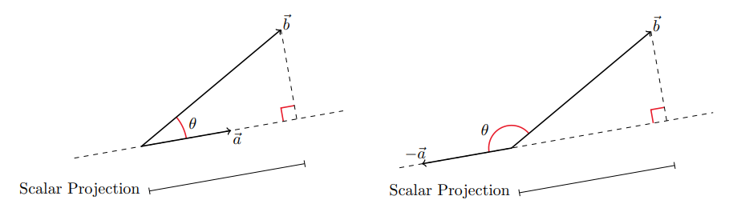
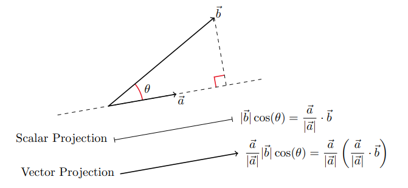

Table of Contents
Miscellaneous Topics

NARROW DISPLAY WARNING
You are most likely using a tablet or mobile device in portrait orientation. This website is best viewed using a typical computer screen with the browser window maximized.
Viewing this website in portrait orientation can cause problems with equations being longer than the screen width (you can scroll to the right), images being poorly sized, and the font size of maths text being much smaller than regular text. If your only option is a tablet or mobile device, your viewing experience will be better if you view this website in landscape orientation. You might need to refresh the page to fix any problems after rotating.
In maths, the dot product, or inner product, can be used to find the angle between a pair of vectors, test if a pair of vectors is parallel or perpendicular, and find the projection of a vector onto another vector. The name "dot product" is comes from the dot operator that is used to represent the operation. Another name is scalar product which emphasizes the output is a scalar.
The dot product of $\vec{a}$ and $\vec{b}$ is the sum of all multiplying all pairs of components in $\vec{a}$ and $\vec{b}$.
In two dimensional space using vector notation,
\begin{equation} \vec{a} \cdot \vec{b} = \langle a_{1},a_{2} \rangle \cdot \langle b_{1},b_{2} \rangle = a_{1}b_{1} + a_{2}b_{2} \end{equation}In two dimensional space using matrix notation,
\begin{equation} \vec{a} \cdot \vec{b} = \begin{bmatrix} a_{1} \\ a_{2} \end{bmatrix}^{T} \begin{bmatrix} b_{1} \\ b_{2} \end{bmatrix} = \begin{bmatrix} a_{1} & a_{2} \end{bmatrix} \begin{bmatrix} b_{1} \\ b_{2} \end{bmatrix} = \begin{bmatrix} a_{1}b_{1} + a_{2}b_{2} \end{bmatrix} \end{equation}In three dimensional space using vector notation,
\begin{equation} \vec{a} \cdot \vec{b} = \langle a_{1},a_{2},a_{3} \rangle \cdot \langle b_{1},b_{2},b_{3} \rangle = a_{1}b_{1} + a_{2}b_{2} + a_{3}b_{3} \end{equation}In three dimensional space using matrix notation,
\begin{equation} \vec{a} \cdot \vec{b} = \begin{bmatrix} a_{1} \\ a_{2} \\ a_{3} \end{bmatrix}^{T} \begin{bmatrix} b_{1} \\ b_{2} \\ b_{3} \end{bmatrix} = \begin{bmatrix} a_{1} & a_{2} & a_{3} \end{bmatrix} \begin{bmatrix} b_{1} \\ b_{2} \\ b_{3} \end{bmatrix} = \begin{bmatrix} a_{1}b_{1} + a_{2}b_{2} + a_{3}b_{3} \end{bmatrix} \end{equation}The dot product is used is because of the relationship,
\begin{equation} |\vec{a} - \vec{b}|^{2} = |\vec{a}||\vec{b}|\cos(\theta) \end{equation}Where $0 \leq \theta \leq \pi$ is the angle formed by the vectors $\vec{a}$ and $\vec{b}$.
This can be proved in two dimensions using the Law of Cosines.
Starting with the Law of Cosines with the triangle side lengths as the lengths of vectors.
\begin{equation} |\vec{a} - \vec{b}|^{2} = |\vec{a}|^{2} + |\vec{b}|^{2} - 2|\vec{a}||\vec{b}|\cos(\theta) \end{equation}Expand out some of the terms.
\begin{equation} |\langle a_{1}-b_{1},a_{2}-b_{2}\rangle|^{2} = \left(\sqrt{a_{1}^{2}+a_{2}^{2}}\right)^{2} + \left(\sqrt{b_{1}^{2}+b_{2}^{2}}\right)^{2} - 2|\vec{a}||\vec{b}|\cos(\theta) \end{equation} \begin{equation} (a_{1}-b_{1})^{2}+(a_{2}-b_{2})^{2} = a_{1}^{2}+a_{2}^{2} + b_{1}^{2}+b_{2}^{2} - 2|\vec{a}||\vec{b}|\cos(\theta) \end{equation} \begin{equation} a_{1}^{2}-2a_{1}b_{1}+b_{1}^{2}+a_{2}^{2}-2a_{2}b_{2}+b_{2}^{2} = a_{1}^{2}+a_{2}^{2} + b_{1}^{2}+b_{2}^{2} - 2|\vec{a}||\vec{b}|\cos(\theta) \end{equation}Cancel out common terms.
\begin{equation} -2a_{1}b_{1}-2a_{2}b_{2} = - 2|\vec{a}||\vec{b}|\cos(\theta) \end{equation}Divide both sides by $-2$.
\begin{equation} a_{1}b_{1} + a_{2}b_{2} = |\vec{a}||\vec{b}|\cos(\theta) \end{equation}Finally, rewrite the LHS as the dot product.
\begin{equation} \vec{a} \cdot \vec{b} = |\vec{a}||\vec{b}|\cos(\theta) \end{equation}To prove $\vec{a} \cdot \vec{b} = |\vec{a}||\vec{b}|\cos(\theta)$ in three or more dimensions, there are multiple ways, but one uses a change of basis to the plane containing $\vec{a}$ and $\vec{b}$ which reduces the problem to a two-dimensional space which was just proved.
Since $\vec{a} \cdot \vec{b} = |\vec{a}||\vec{b}|\cos(\theta)$, there are some easy tests to check if two vectors are orthogonal or pointing in the same direction, and pointing in opposite directions.
If $\vec{a}$ and $\vec{b}$ form a right angle with each other, called orthogonal, then the dot product is zero.
If $\vec{a}$ and $\vec{b}$ point in the same direction, then the dot product is $|\vec{a}||\vec{b}|$.
If $\vec{a}$ and $\vec{b}$ point in opposite directions, then the dot product is $-|\vec{a}||\vec{b}|$.
For two vectors $\vec{a}$ and $\vec{b}$, sometimes it's useful to find how much of a vector $\vec{b}$ is in the direction of $\vec{a}$. The scalar projection of $\vec{b}$ onto $\vec{a}$ is the length of the side of a right triangle with hypotenuse $\vec{b}$ and base in the direction of $\vec{a}$. It does not matter if $\vec{a}$ and $\vec{b}$ form an acute or obtuse angle. The projection will be exactly the same.
The dot product can be used to find the scalar projection $\vec{b}$ onto $\vec{a}$ because that length is $|\vec{b}|\cos(\theta)$.
The vector projection of $\vec{b}$ onto $\vec{a}$ is a vector instead of a scalar. This can be calculated by multiplying the scalar projection by a length 1 vector, called a unit vector, in the direction of $\vec{a}$. Dividing $\vec{a}$ by its length will make a unit vector in the direction of $\vec{a}$.